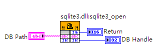

#LabVIEW访问SQLite数据库接口研究
原创作者：王永建(blog@wangyongjian.cn)
原文引用地址：blog.wangyongjian.cn
【摘要】 本文介绍了LabVIEW环境下利用API技术访问开源数据库SQLite的方法，实现了可跨平台操作的数据库。采用此种方法完成了对过程控制中历史数据的保存、数据分析等数据库访问管理，并取得了较好的效果。 【关键字】 LabVIEW SQLite 数据库 Vxworks 跨平台数据库
利用LabVIEW开发应用软件时经常需要对数据库访问，尤其是在过程控制中要大量保存历史数据。通过数据库访问技术，用户可以方便的创建一个使用数据库来管理大量数据，存储过程数据并且能够分析过程结果的自动控制系统。但是LabVIEW本身并不具备数据库访问功能。据作者所知，目前常见的解决这个问题的工具包都是利用LabVIEW的ActiveX功能，把调用Microsoft ADO控件，和SQL语言对数据库的访问进行了不同程度封装。 使得即使不了解Microsoft ADO控件以及SQL语言也可以操作数据库。
由于这些工具包都是基于ADO控件的，而ADO是Windows系统的一个数据库访问控件，只能运行在Windows平台上，并不支持跨平台应用。作者近来在做的一个项目用的是Vxworks的系统环境，现有的数据库工具包不在适用。在这里我们引入了SQLite数据库。
1.SQLite数据库简介
SQLite第一个Alpha版本诞生于2000年5月。 SQLite是一款轻型的开源数据库、遵守ACID的关联式数据库管理系统，它的设计目标是嵌入式的，而且目前已经在很多嵌入式产品中使用了它，它占用资源非常的低，在嵌入式设备中，可能只需要几百K的内存就够了。它能够支持Windows/Linux/Unix/Vxworks等主流的操作系统，同时能够跟很多程序语言相结合，比如Tcl、C#、PHP、Java等，同样比起Mysql、PostgreSQL这两款开源世界著名的数据库管理系统来讲，它的处理速度比他们都快。更多介绍可访问其官方网站Http://www.sqlite.org 1.1 SQLite数据库特性 a. 零配置：不用安装和管理配置。并且独立，不需要额外依赖，只要有一个编译好的动态库文件即可。 b. 存储在单一文件中的完整数据库，而且不受不同操作系统字节顺序的影响；数据库转移不需要格式转换。 c. 支持SQL语言，数据库操作简单，方便程序移植。 d. 数据库可以很大，最大可以到2TB。虽然不可能会用的那么大。起码没有以前遇到的2GB的限制。 e. 提供完整的API应用。使用简单。提供源代码，可以根据需要重编译应用于其他平台。
2.通过LabVIEW对SQLite数据库访问操作
SQLite数据库提供了完成的API接口，我们这里通过LabVIEW的API接口功能（调用库函数节点）来实现对SQLite数据库的操作。这里我们需要一个已编译的动态链接库。由于SQLite是开源的，其源代码可以通过www.sqlite.org上去下载，并根据运行目标编译不同的动态链接库。这里需要强调的是由于我们的开发平台是Windows系统，需要同时编一个可用于Windows系统的动态链接库DLL。以便开发使用和调试。 2.1 SQLite数据的基本操作流程
一次完成的SQLite数据库操作包括 1、打开（没有为自动新建）数据库； 2、编译SQL语句。由于SQLite不能直接执行SQL指令，需要将SQL指令编译成字节码。 3、执行操作 4、获取执行结果； 5、销毁SQL指令字节码； 6、关闭数据库。
2.2 新建（或者打开已有）数据库
打开数据库用到的是sqlite3_open()。函数原型如下：
int sqlite3_open(
const char *filename, /* Database filename (UTF-8) */
sqlite3 **ppDb /* OUT: SQLite db handle */
);
filename是用这个函数开始数据库操作,需要传入的参数是数据库文件的完整路径，比如：c:\Test_Database.db。字符串编码必须中UTF格式，负责路径中不能包含中文。 注：文件名不需要一定存在，如果此文件不存在，SQLite会自动建立它。如果它存在，就尝试把它当数据库文件来打开。
sqlite3 ** 返回的是数据库的操作句柄（引用），是一个32位有符号整型数据。
函数返回值表示操作是否正确，如果返回SQLITE_OK（0） 则表示操作正常。

图2：LabVIEW中打开数据库节点
2.3执行SQL语句
在SQLite中提供一些已封装的函数供直接执行SQL语句，如sqlite3_exec()、sqlite3_get_table()。这里我们主要介绍SQLite的SQL执行过程，对于SQLite中已封装的函数请参考相关说明，这里不再阐述。
通过图1所示，我们可以看到SQLite执行一条SQL语句需要三个步骤，与之相关的函数包括：sqlite3_prepare()，sqlite3_step()，sqlite3_finalize。下面我们详细看一下这几个函数的作用和用法。
2.3.1. SQL语句声明（编译）
SQLite中并不能直接识别SQL语句，在执行SQL操作前需要先将SQL语句编译成SQLite可识别的二进制字节码，SQLite提供了sqlite3_prepare()函数来执行SQL语句的编译。
sqlite3_prepare()函数原型为：
int sqlite3_prepare(
sqlite3 *db,/* Database handle */
const char *zSql, /* SQL statement, UTF-8 encoded */
int nByte, /* Maximum length of zSql in bytes. */
sqlite3_stmt **ppStmt, /* OUT: Statement handle */
const char **pzTail /* OUT: Pointer to unused portion of zSql */
)；
函数返回的stmt就是已编译的二进制字节码，提供给后续的操作函数。 图3：LabVIEW中编译SQL语句节点
sqlite3_prepare 接口把一条SQL语句编译成字节码留给后面的执行函数。 使用该接口访问数据库是当前比较好的的一种方法。注：输入的参数中只有第一个SQL语句会被编译 2.3.2. 执行SQL语句 在SQL声明准备好之后, 需要调用sqlite3_step()来执行:
sqlite3_step()函数原型
int sqlite3_step(sqlite3_stmt*)；
图4：LabVIEW中执行SQL语句节点
在这里需要注意的是成功执行完sqlite3_step()后并不会返回SQLITE_OK(0)。在执行INSERT、UPDATE、CREATE TABLE、DROP TABLE、DELETE等数据库操作时，如果SQL语句执行成功或者正常sqlite3_step() 函数将返回 SQLITE_DONE（101），否则将返回错误代码。在执行SELETE操作时，如果SQL返回了查询结果，sqlite3_step() 函数将返回 SQLITE_ROW（100）。
注：如果SQL语言是SELETE操作，每执行一次sqlite3_step() 函数，只能返回一条查询结果，如果要获取多条查询结果，则需要多次执行sqlite3_step() 函数。
如果函数的返回值是 SQLITE_ROW（100）, 那么下边的这些方法可以用来获得记录集行中的数据： 1. sqlite3_column_count()函数返回结果集中包含的列数。 2. sqlite3_column_decltype() 则用来返回该列在 CREATE TABLE 语句中声明的类型。 3. sqlite3_column_name() 返回第N列的字段名。 4. sqlite3_column_bytes() 用来返回 UTF-8 编码的BLOBs列的字节数或者TEXT字符串的字节数。 5. sqlite3_column_text() 返回 UTF-8 编码的 TEXT 数据。 6. 不一定非要按照sqlite3_column_type()接口返回的数据类型来获取数据. 数据类型不同时软件将自动转换.
2.3.3. 结束SQL语句 在数据库关闭之前，所有准备好的声明都必须被释放销毁。在执行了sqlite3_prepare()函数之后，任何时候都可以通过调用 sqlite3_finalize() 将一个准备好的SQL声明销毁。
sqlite3_finalize()函数原型：
int sqlite3_finalize(sqlite3_stmt*)；
图5：LabVIEW中结束SQL语句节点
2.4 关闭数据库
用sqlite3_close()关闭已打开的数据库，释放资源。
sqlite3_close()函数原型：
int sqlite3_close(sqlite3 *)；
图6：LabVIEW中关闭SQLite数据库节点
3. 在LabVIEW中完成一次数据库完成操作实例
图7：LabVIEW中创建数据表实例